Êtes-vous nouveau dans la crypto et voulez-vous acheter du XRP avant qu'il ne s'envole encore plus fort ? Dans cette vidéo, je vais vous guider pas à pas tout au long du processus. Comment acheter du XRP avec des euros ou des dollars sur Kraken. Et ensuite, si vous cherchez réellement à gagner de l'argent en trading, comment retirer votre XRP ou USDT vers Bybit, où vous pouvez trader du XRP avec des frais bas et jusqu'à 10 fois de effet de levier. C'est le meilleur des deux mondes, un point d'entrée sécurisé et régulé avec Kraken et une puissante plateforme de trading avec Bybit pour maximiser vos profits. Tous les liens sont dans la description, y compris mes liens de parrainage pour Kraken et Bybit, qui vous donnent des bonus exclusifs et des réductions sur les frais.
Interface & Outils : Kraken, WEEX (plateformes d'échange de cryptomonnaies)
Contenu textuel & Code : Valeur du portefeuille à 5 633,47 €, performance mensuelle de +63,43%, graphique de prix XRP/USDT avec indicateur de volume (SMA 9) sur WEEX, prix actuel de XRP à 3,6266 $.
Action / Démonstration : Présentation de l'interface d'achat de XRP sur Kraken puis démonstration du graphique de trading et des carnets d'ordres pour la paire XRP/USDT sur WEEX.
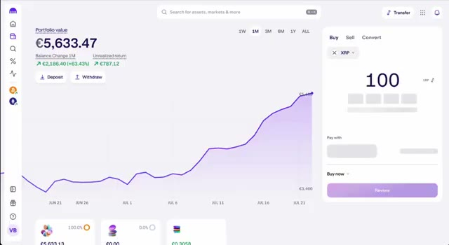
🔍 Agrandir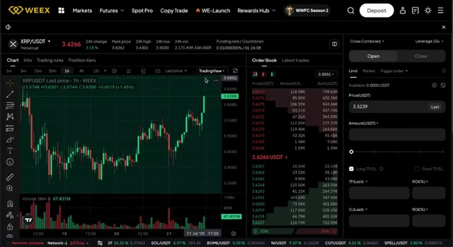
🔍 AgrandirEntrons dans le vif du sujet. Alors, pourquoi tout le monde reparle-t-il soudainement du XRP ? Eh bien, plusieurs événements majeurs viennent de se produire. Tout d'abord, la SEC a approuvé le tout premier ETF XRP aux États-Unis, ce qui signifie que les gros capitaux institutionnels commencent enfin à affluer. Deuxièmement, Ripple lance son propre stablecoin, appelé RLUSD, soutenu par des banques de premier plan, et ils demandent une licence bancaire américaine, ce qui pourrait complètement faire le pont entre la crypto et la finance traditionnelle. De plus, une toute nouvelle sidechain compatible avec Ethereum est en cours de construction sur le grand livre XRP, apportant des contrats intelligents, des applications décentralisées et des cas d'utilisation dans le monde réel à l'écosystème. En plus
Interface & Outils : Navigateur web affichant divers sites d'actualités financières (CryptoSlate) et institutionnels sur les cryptomonnaies.
Contenu textuel & Code : Titres d'articles sur l'approbation d'un ETF XRP par la SEC, le stablecoin RLUSD de Ripple, et le lancement de la sidechain EVM pour le XRP Ledger.
Action / Démonstration : Présentation de captures d'articles de presse et de pages web pour illustrer les actualités majeures concernant le XRP.
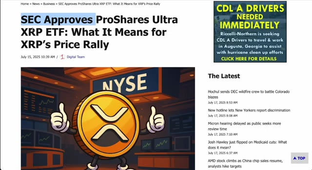
🔍 Agrandir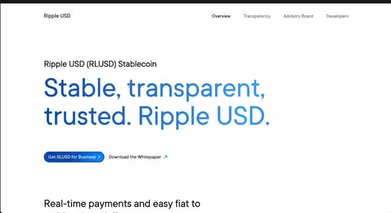
🔍 Agrandir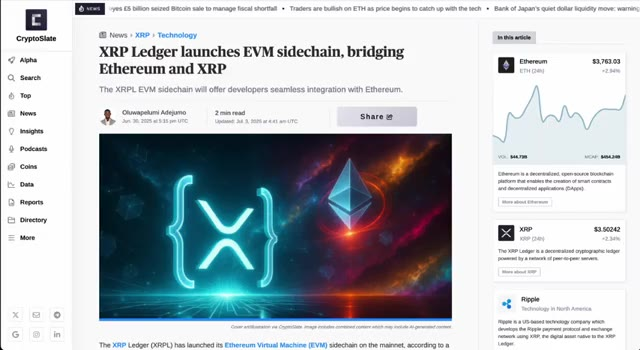
🔍 Agrandirde tout cela, les graphiques sont haussiers, les "whales" accumulent et nous sommes en plein cœur d'un marché haussier des cryptomonnaies. Pour faire court, XRP a de l'élan, de solides fondamentaux et un potentiel de hausse massif en ce moment même. Et c'est exactement pourquoi cette vidéo est importante. Tout d'abord, nous devons créer votre compte sur Kraken, l'une des plateformes d'échange de cryptomonnaies les plus fiables du marché. Rendez-vous sur kraken.com ou cliquez sur le premier lien dans la description. Appuyez sur s'inscrire, entrez votre e-mail, définissez un mot de passe fort et sélectionnez votre pays.
Interface & Outils : TradingView, Kraken
Contenu textuel & Code : Graphique de prix XRP/USD (Binance) en données hebdomadaires, affichant un cours actuel à 3,4887 $ avec des indicateurs de performance et des tracés techniques (lignes de tendance convergentes).
Action / Démonstration : Analyse technique haussière du cours de XRP sur une vue à long terme.
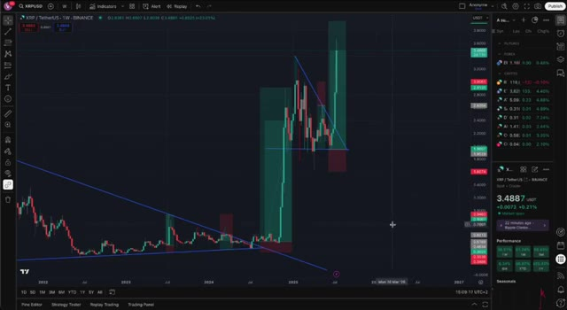
🔍 AgrandirUne fois que c'est fait, vérifiez votre boîte de réception et confirmez votre e-mail. Kraken est entièrement réglementé, ils auront donc besoin de vérifier votre identité. Mais ne vous inquiétez pas, c'est rapide. Il vous suffit de télécharger une photo de votre pièce d'identité ou de votre passeport et de prendre un selfie. La plupart des gens sont vérifiés en quelques minutes seulement. Et maintenant que vous êtes vérifié, approvisionnons votre compte. Cliquez sur portefeuille, puis sur dépôt. Vous pouvez déposer en euros, en dollars ou dans d'autres monnaies locales. Et si vous êtes en Europe, les virements bancaires SEPA sont généralement l'option la moins chère. Suivez attentivement les instructions. Assurez-vous d'envoyer le virement depuis
Interface & Outils : Interface web de l'échange de cryptomonnaies Kraken.
Contenu textuel & Code : Statut de vérification du compte (KYC) et options de dépôt de fonds en devises fiat. [DESC_IMAGE_1] Navigation dans les paramètres de vérification du compte sur l'échange Kraken. [DESC_IMAGE_2] Affichage de la fenêtre contextuelle pour effectuer un dépôt de devises fiat sur Kraken.
Action / Démonstration : Explications face caméra et analyse conceptuelle des marchés.
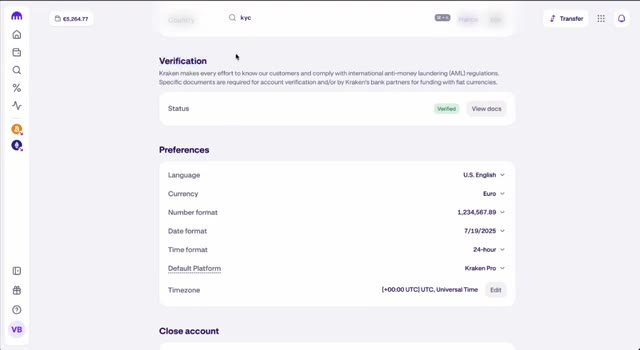
🔍 Agrandir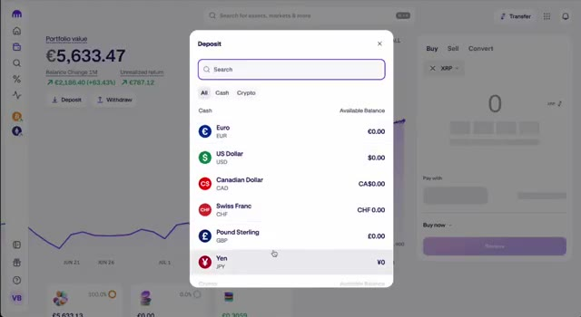
🔍 Agrandirun compte bancaire à votre nom. Évitez d'utiliser PayPal ou les cartes de crédit. Les frais sont plus élevés et cela n'en vaut pas la peine. Une fois votre virement arrivé, votre solde Kraken se mettra à jour et vous serez prêt à acheter du XRP. Il est temps d'obtenir votre XRP. Allez dans l'onglet acheter/vendre ou l'onglet convertir sur Kraken. Sélectionnez votre monnaie fiat comme les euros ou l'USD et choisissez le XRP comme crypto. Entrez le montant que vous voulez acheter, peut-être 50 euros ou 100 euros. Cliquez sur réviser, puis confirmez. Félicitations, vous possédez maintenant du XRP. Mais voici le
Interface & Outils : Kraken (interface Web d'échange de cryptomonnaies)
Contenu textuel & Code : Valeur du portefeuille à 5 633,47 €, variation du solde sur 1 mois (+63,43 %), graphique d'évolution du solde et module d'achat rapide de cryptomonnaies (Buy/Sell/Convert).
Action / Démonstration : Consultation du solde du compte et du graphique de performance après le dépôt de fonds.
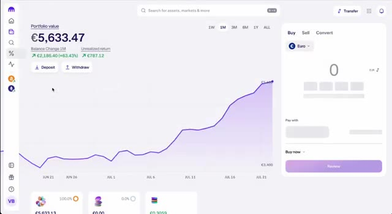
🔍 Agrandirchose. La plupart des gens achètent et conservent tout simplement du XRP en espérant que le prix monte. Si vous voulez vraiment gagner de l'argent avec le XRP, vous devriez apprendre à le trader. Et pour cela, nous allons transférer votre XRP ou USDT vers Weeks. Mais si votre objectif est l'investissement à long terme, conserver du XRP très bien. Mais si vous voulez profiter des hauts et des bas du marché, vous avez besoin d'une plateforme de trading avec plus de flexibilité. C'est là que Weeks entre en jeu. Weeks propose des frais bas, des outils puissants et jusqu'à 10 fois de effet de levier sur la paire XRP USDT. C'est également adapté aux débutants, et avec mon lien de parrainage, vous obtiendrez jusqu'à 100 USDT de bonus lorsque vous déposerez et
Interface & Outils : TradingView, plateforme de change WEEX (interface de trading spot/futures).
Contenu textuel & Code : Graphiques en chandeliers japonais, graphiques de volume (Volume SMA 9), carnets d'ordres en temps réel, niveaux de prix et outils de dessin techniques.
Action / Démonstration : Analyse technique du XRP avec traçage de lignes de tendance sur TradingView, suivie d'une transition vers la plateforme WEEX pour illustrer le trading actif.
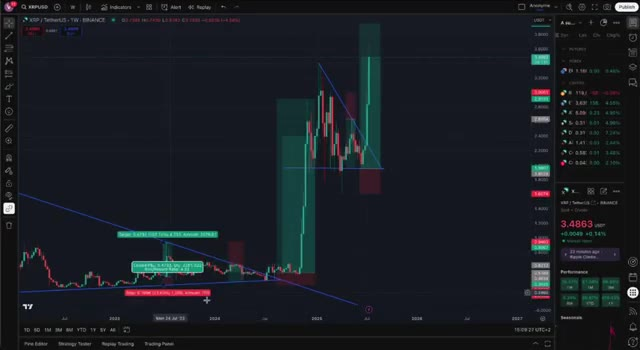
🔍 Agrandir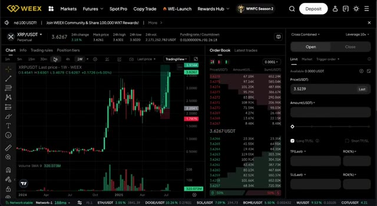
🔍 Agrandirtrade. Donc déplaçons vos fonds. Si vous avez acheté du XRP, vous pouvez le retirer directement vers Weeks, mais si vous préférez, vous pouvez aussi convertir votre XRP en USDT sur Kraken et retirer cela à la place. Voici comment faire. Ouvrez votre compte Weeks en utilisant le deuxième lien dans la description. Allez dans Actifs, Dépôt, et sélectionnez USDT ou XRP.
Interface & Outils : Kraken, WEEX
Contenu textuel & Code : Graphique de performance du portefeuille Kraken (5 611,97 €), graphique de prix XRP/USDT sur WEEX avec indicateurs de volume et carnet d'ordres en temps réel.
Action / Démonstration : Présentation des interfaces de Kraken (pour la conversion de XRP en USDT) et de WEEX (pour le dépôt et le trading de la cryptomonnaie).
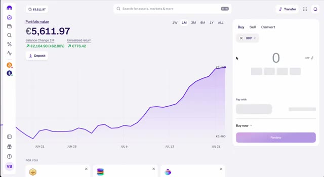
🔍 Agrandir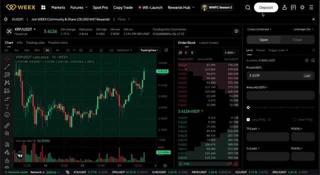
🔍 AgrandirChoisissez le réseau TRC20 pour l'USDT. C'est rapide et bon marché. Copiez l'adresse de dépôt. Maintenant, retournez sur Kraken. Trouvez votre USDT ou XRP dans le portefeuille. Cliquez sur Retirer. Collez l'adresse de la semaine. Sélectionnez le bon réseau, TRC20 pour l'USDT. Entrez le montant. Confirmez la transaction.
Interface & Outils : Plateformes d'échange WEEX et Kraken.
Contenu textuel & Code : Menus de dépôt et de retrait, sélection des crypto-monnaies (USDT, BTC, ETH, XRP), choix du réseau TRC20, et soldes du portefeuille.
Action / Démonstration : Sélection du réseau TRC20 sur WEEX puis navigation vers Kraken pour initier le retrait d'USDT ou XRP.
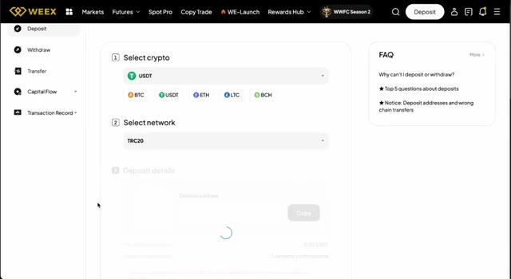
🔍 Agrandir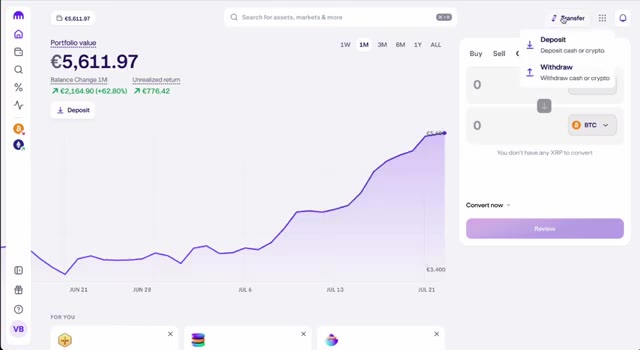
🔍 Agrandir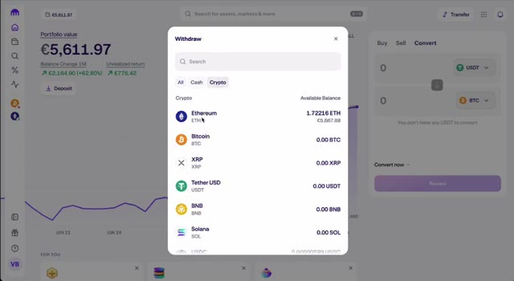
🔍 AgrandirVos fonds devraient arriver sur Bybit en quelques minutes. Bien, passons maintenant à la partie principale : ouvrons votre premier trade de XRP. Sur Bybit, allez sur l'onglet au comptant ou futures et, pour les débutants, commençons par le comptant. C'est plus sûr et facile à utiliser. Le clic suivant consiste à rechercher XRP USDT. Cliquez sur acheter et choisissez le montant d'USDT que vous voulez dépenser. Si vous êtes plus avancé, allez sur l'onglet futures où vous pouvez trader du XRP avec un effet de levier allant jusqu'à 10 fois. Faites juste attention, définissez votre stop loss, prenez vos profits et gérez votre risque sagement. C'est là que les traders expérimentés font de vrais profits.
Interface & Outils : Interface de la plateforme d'échange de cryptomonnaies WEEX (sections Spot et Futures).
Contenu textuel & Code : Paire XRP/USDT, soldes en USDT et Bitcoin, carnets d'ordres (Order Book), graphiques de prix journaliers (1D), indicateur Volume SMA 9.
Action / Démonstration : Navigation dans les menus de la plateforme WEEX, sélection de la paire XRP/USDT pour le trading spot et futures.
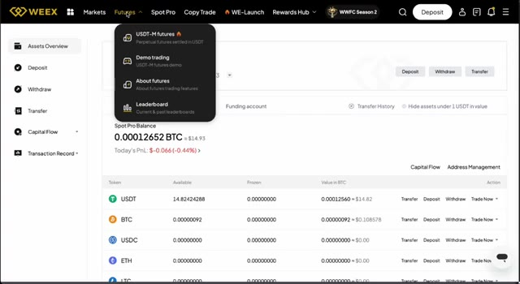
🔍 Agrandir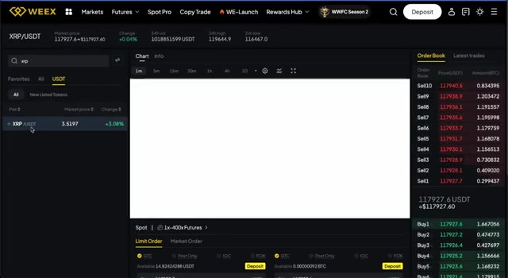
🔍 Agrandir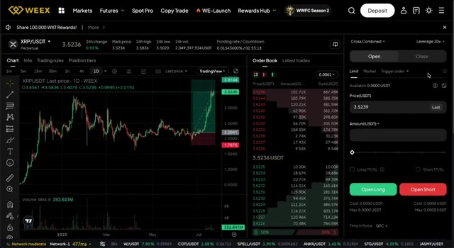
🔍 Agrandiracheter lors de la baisse, profiter de la hausse, et réentrer avec une stratégie. Donc pour récapituler, vous avez créé votre compte Kraken, vérifié votre identité, déposé de la monnaie fiat, acheté du XRP, envoyé vos fonds vers weeks, et appris à trader comme un pro. Si cette vidéo vous a aidé, veuillez soutenir la chaîne en utilisant les liens d'affiliation dans la description.
Interface & Outils : Kraken (plateforme d'échange crypto), WEEX (bourse de dérivés crypto).
Contenu textuel & Code : Valeur du portefeuille (€5,633.47), performance (+63.43%), graphique en chandelier journalier XRP/USDT, carnet d'ordres, module de passage d'ordres Long/Short.
Action / Démonstration : Configuration d'un compte, consultation de l'évolution d'un portefeuille, analyse technique du XRP et préparation d'une position de trading.
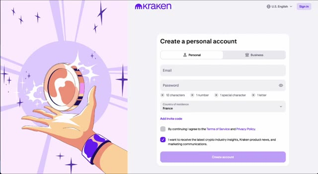
🔍 Agrandir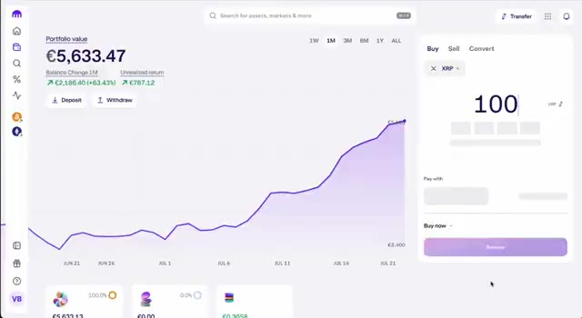
🔍 Agrandir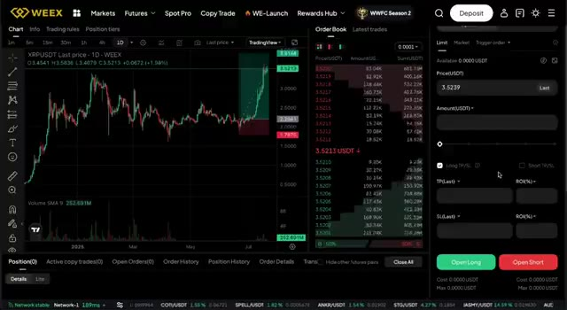
🔍 AgrandirVous obtiendrez des bonus exclusifs et cela nous aide à continuer à créer ce contenu. Et si vous voulez apprendre à maîtriser le trading de cryptomonnaies, regardez la prochaine vidéo sur la façon de repérer les hausses des altcoins avant qu'elles ne se produisent. Elle est liée juste ici sur l'écran. Merci d'avoir regardé et à la prochaine.
Interface & Outils : YouTube (Interface web de visionnage et de gestion de chaîne)
Contenu textuel & Code : Interface YouTube affichant la vidéo "How to Buy USDT to Trade With (Cheap and Easy)", des liens vers Kraken et WEEX, ainsi que d'autres vidéos recommandées de la chaîne.
Action / Démonstration : Navigation sur la plateforme YouTube pour montrer la chaîne, la description de la vidéo et les recommandations de contenu connexe.
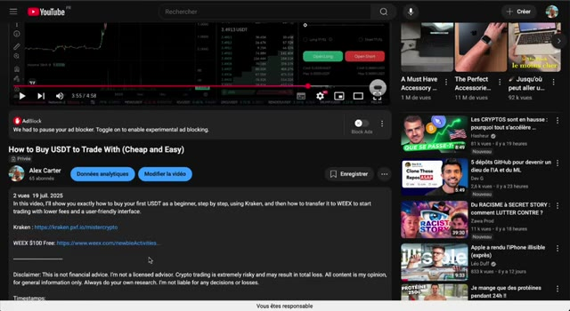
🔍 Agrandir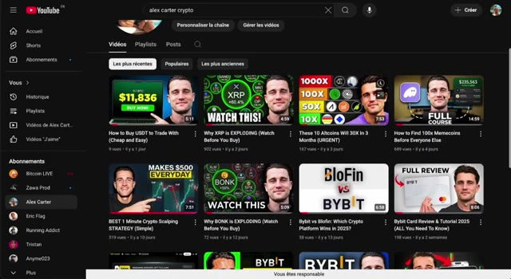
🔍 Agrandir